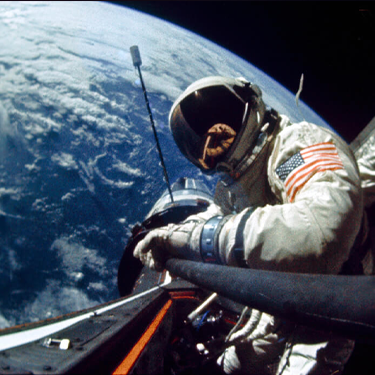
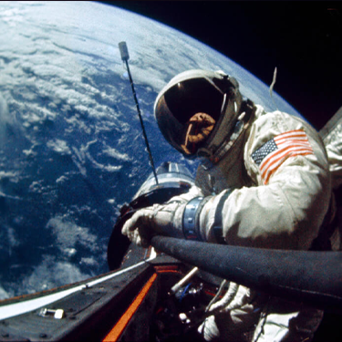

| Missziók | |
|---|---|
| Program | Részletek | Mercury-program |
| Little Joe | Olcsóbb hordozóeszköz kifejlesztése mellett döntöttek a költségek spórolása miatt. A leendő rakétának képesnek kellett lenni a Mercury űrhajó felbocsátására, úgy hogy kipróbálható legyen a mentőrendszer, a leszállító ejtőernyőrendszer és értékelhetőek legyenek a leszállás utáni keresési és mentési folyamatok. |
| Redstone | A Redstone rakéta szintén költségtakarékossági és megbízhatósági okokból került be a NASA űrprogramjába. A Redstone a Mercury-programban a szuborbitális repülések rakétája lett. |
| Atlas | A Mercury-program egyik központi hardvere a hordozórakéta volt. A követelményrendszer ezzel kapcsolatban egyszerű volt: egy 1500–800 kg-os tárgyat kellett tudnia első kozmikus sebességre gyorsítani és Föld körüli pályára állítani. | Gemini-program |
| Gemini I | A Gemini–1 volt a Gemini-program első küldetése. Személyzet nélkül indították. 64 keringés után visszatért a légkörbe és elégett. A kísérlet sikerrel végződött. |
| Gemini III | A Gemini–3 volt az amerikai Gemini-program első emberes repülése 1965. március 23-án. A Gemini-program fő célja, hogy előkészítse az Apollo-program holdra szállását és kikísérletezze a Hold eléréséhez szükséges eljárásokat. |
| Gemini IV | A Gemini–4 volt az amerikai Gemini-program második emberes űrrepülése. A repülés során a két űrhajós 62 Föld körüli keringést tett meg. Ed White végrehajtotta az első amerikai űrsétát. |
| Gemini V | Az űrrandevú kipróbálása került előtérbe. A közelükben semmilyen megközelítendő tárgy nem volt, csak az űr egy megkülönböztetett pontja mellé kellett az űrhajót elnavigálni. A legénység által megkísérelt „fantom randevú” teljes sikerrel járt. |
| Gemini VII | A Gemini VII fő feladata a Gemini célok között egy másodlagos cél kikísérletezése volt: olyan hosszú időtartamú repülést kellett végrehajtani. |
| Gemini VIII | A Gemini repülések során ekkorra már csak egyetlen kipróbálatlan művelet maradt hátra, két űrhajó összekapcsolása, azaz a dokkolás. A világ első sikeres űrdokkolása, viszont közvetlen utána vészhelyzet alakult ki. Az űrhajójuk forogni kezdett. A két űrhajós életveszélybe került, ám végül Armstrong a légköri visszatérésre tartogatott kormányrendszer aktiválásával elhárította a vészhelyzetet. |
| Gemini XI | A felszállás utáni első keringésben végre kellett hajtani az űrrandevút. A Gemini űrhajó sikerrel randevúzott és dokkolt az Agenával. A következő fontosabb feladat egy űrséta volt, amit idő előtt be kellett fejezni a pilóta kimerültsége miatt. |
| Gemini XII | A repüléssel befejeződött a Gemini-program tesztrepüléseinek sora, amellyel a holdra szálláshoz szükséges műveleteket kísérletezték ki az Apollo–program számára és amellyel számos űrhajós szerezhetett jártasságot ezen később is alkalmazott műveletekhez. |
| Apollo-program | |
| Apollo-1 | Az indítás előtti, földi tesztelések során az Apollo–1 kabinjában tűz ütött ki, és az ott tartózkodó három űrhajós, Virgil Grissom, Edward White és Roger Chaffee meghalt. | Apollo-4 | A NASA hivatalossá tette, hogy az Apollo–1 után Apollo–4 jelzéssel az első Saturn V rakéta indítása következik, de még ember nélkül. A rakéta 18 057 km-re távolodott el a Földtől. |
| Apollo-5 | Az Apollo–5 feladata a holdkomp tesztelése volt, de a holdkomp gyártása csúszott. Az űrhajóval elsősorban hajtóműteszteket végeztek, amelyek egy szoftverhiba miatt csak félig sikerültek. |
| Apollo-6 | Az Apollo–6 indítására 1968 tavaszán már közel sem voltak annyian kíváncsiak, mint korábban. Ez nem is volt véletlen, ugyanis nemcsak Amerika, hanem az egész világ másra figyelt, aznap lőtte le egy merénylő Martin Luther King polgárjogi aktivistát. |
| Apollo-7 | Az Apollo–7 küldetése volt az Apollo-program első repülése, amely a program első űrhajósokkal végrehajtott
repülése volt.
A repülés fő feladata az Apollo–1 tragédiája miatt átalakított űrhajó berepülése volt.
Legénység: Wally Schirra parancsnok, Donn Eisele parancsnokimodul-pilóta és Walt Cunningham holdkomppilóta. |
| Apollo-8 | Az Apollo–8 a NASA egyik legkockázatosabb expedíciója volt,
ezen a repülésen érték el először emberek a Holdat. A szovjetekkel vívott verseny miatt egy különleges utat iktattak be,
amelynek elsődleges célja a Hold elsőkénti elérése volt. Legénység: Frank Borman parancsnok, Jim Lovell parancsnokimodul-pilóta és Bill Anders holdkomppilóta. |
| Apollo-9 | A holdprogram harmadik küldetése,
amelynek célja a holdkomp berepülése volt. Legénység: Jim McDivitt parancsnok, Dave Scott parancsnokiegység-pilóta és Rusty Schweickart holdkomppilóta. |
| Apollo-10 | Az Apollo-program negyedik űrrepülése volt, amely a
holdra szállás jelmezes főpróbájának számított.
Egészen 15 000 méterig ereszkedtek a Hold felszíne fölött,
mindössze a leszállást nem próbálhatták ki. Legénység: Tom Stafford parancsnok, John Young parancsnokiegység-pilóta és Gene Cernan. |
| Apollo-11 | Armstrong, Collins és Aldrin 1969. július 16-án emelkedett a magasba a Cape Kennedy űrközpontból,
3 nap alatt érték el a Holdat.
Aldrin és Armstrong átmászott az Eagle („Sas”) nevű holdkompba,
Collins egyedül maradt a parancsnoki egységben.
A leszállást végig nehézségek kísérték, Armstrong végül
az egyébként is szűkös üzemanyag intenzív felhasználásával,
kézi vezérléssel bravúrosan egy biztonságos helyre navigálta a holdkompot és
Aldrinnal szerencsésen leszálltak a Nyugalom Tengerén. „Houston, itt a Nyugalom Bázis. A Sas leszállt” „Kis lépés ez egy embernek, de hatalmas ugrás az emberiségnek.” |
 
